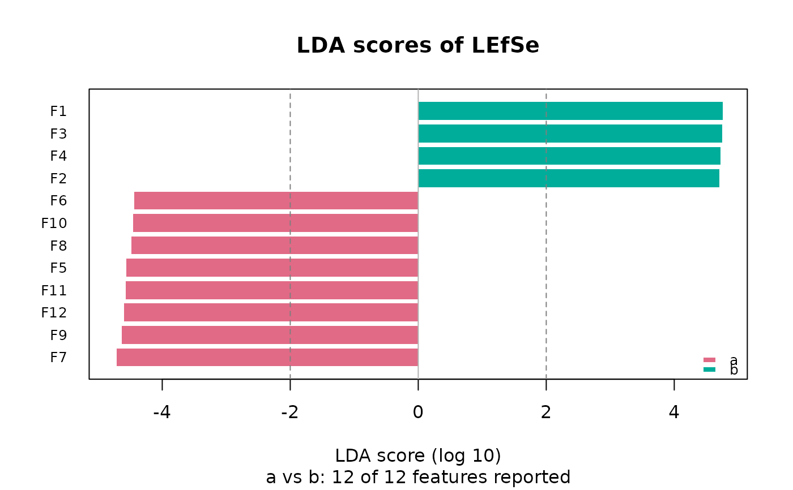

Finds the features that differ between groups of samples with LEfSe (Segata et al. 2011): a Kruskal-Wallis test of each feature, pairwise Wilcoxon tests between subgroups for those that pass, and a bootstrapped linear discriminant analysis whose effect size, the "LDA score", ranks them. A port of LEfSe 1.1.2, the program papers cite.
Usage
lefse(
counts,
groups,
data = NULL,
subgroups = NULL,
margin = 1L,
total = 1e+06,
alpha = 0.05,
wilcoxon = TRUE,
wilcoxon_alpha = 0.05,
lda_threshold = 2,
n_boots = 30L,
boot_fraction = 0.67,
min_subgroup = 10L,
one_against_one = FALSE,
same_subgroups = FALSE,
p_adjust = "holm",
seed = 0L,
cpus = n_cpus()
)Arguments
- counts
A numeric matrix of non-negative abundances (samples \(\times\) features), or any of the objects listed under Input Types.
- groups
The classes to compare: the name of a column of
data, or a vector with one value per sample. Two or more classes. A factor's levels give their order; other values are sorted.- data
A data frame of sample metadata, with the variables of
groupsorformula. Its rows are matched to the samples ofcountsby name when both have names, else by position.- subgroups
Subclasses within the classes, for the Wilcoxon step: the name of a column of
data, or one value per sample.NULL(the default) makes each class one subgroup.- margin
The margin containing samples.
1if samples are rows,2if samples are columns. Ignored whencountsis a special object class (e.g.phyloseq). Default:1- total
Each sample is rescaled to sum to
totalbefore testing: the default,1e6, gives counts per million, as LEfSe's Galaxy instructions and lefser do (LEfSe's-o 1000000), and is the scale thelda_thresholdof 2 was set for.NULLuses the values as given (LEfSe's command-line default).- alpha
The significance level of the Kruskal-Wallis step: a feature passes when its adjusted p-value is below
alpha(LEfSe's-a). Default0.05.- wilcoxon
Whether to run the Wilcoxon step (LEfSe's
--wilc). DefaultTRUE.- wilcoxon_alpha
The significance level of the Wilcoxon step (LEfSe's
-w): each comparison's two-sided p-value must be below2 * wilcoxon_alpha, as in LEfSe. Default0.05.- lda_threshold
Features are reported (
reject) when their LDA score is above this (LEfSe's-l). Default2.- n_boots
The number of bootstrap subsamples the LDA is fitted to (LEfSe's
-b). Default30.- boot_fraction
The size of each bootstrap subsample, as a fraction of the samples (LEfSe's
-f), above 0 and at most 1. Default0.67.- min_subgroup
Subgroups with fewer samples than this are compared by their medians alone, without a test (LEfSe's
--min_c). Default10.- one_against_one
With three or more classes:
FALSE(the default) passes a feature when one class differs from every other one ("one against all");TRUEneeds every pair of classes to differ (LEfSe's-y 1, stricter).- same_subgroups
With
subgroups: whether to compare only the subgroups of the same name in different classes (LEfSe's-e). DefaultFALSE: every subgroup of one class against every subgroup of the other.- p_adjust
How to adjust the Kruskal-Wallis p-values for testing every feature: any method of
stats::p.adjust():'holm'(the default, as ecodive's other DA methods),'BH'(recommended, as the benchmarks), or'none'(LEfSe, which has no adjustment).- seed
An integer seed for the jitter and the bootstrap subsamples. The same
seedgives the same scores, for anycpus.- cpus
How many parallel processing threads should be used. The default,
n_cpus(), is the CPU cores this R process may use, within any limits set on it. Results are the same for anycpus.
Value
A data frame with a row per feature, in the order of counts, of
class c('ecodive_lefse', 'data.frame'), with columns:
feature: the feature's name, or its index as text.enriched: the class where its mean is largest (LEfSe's output names it for the reported features).log_max_mean: \(\log_{10}\) of that mean, at least 0 (LEfSe's second column).kw_stat,p_value: the Kruskal-Wallis statistic and p-value.p_adjusted: the p-value adjusted withp_adjust.wilcoxon: whether the feature passed the Wilcoxon step;NAwhen it failed the Kruskal-Wallis step orwilcoxon = FALSE.lda_score: the LDA score, for the features that passed both steps;NaNfor the others.reject:TRUEfor the features LEfSe reports: passed both steps, withlda_score > lda_threshold.
Missing values are NaN (all of a feature's values tied gives NaN
Kruskal-Wallis statistics and p-values, and the feature fails).
Attributes: method ("lefse"), groups (the classes, in order),
subgroups (the subgroups' names, or NULL), alpha,
wilcoxon_alpha, lda_threshold, n_boots, boot_fraction, total
(NA for none), p_adjust, log_base (NA: the score is a
\(\log_{10}\) of a difference, not a log fold change), and means
(the class \(\times\) feature matrix of class means of the rescaled
table).
Details
The steps. Each sample is first rescaled to sum to total. Then:
Kruskal-Wallis. Each feature is tested across the classes, as
stats::kruskal.test()does (average ranks, the tie correction). It passes when its adjusted p-value is belowalpha.Wilcoxon (when
wilcoxon = TRUE), for the features that passed. For each pair of classes, every subgroup of one is compared with every subgroup of the other (withsame_subgroups, only those of the same name). When both subgroups have at leastmin_subgroupsamples, the comparison is a two-sided Wilcoxon rank-sum test (the normal approximation with the variance corrected for ties and no continuity correction, ascoin::wilcox_test()'s asymptotic test), which must give a p-value below2 * wilcoxon_alpha; otherwise only the medians are compared. Every comparison must find the medians in the same direction, and differ. The pair of classes differs when all its comparisons do. With two classes the feature passes when they differ; with more, when one class differs from all others (or, withone_against_one, every pair does).LDA effect size, for the features that passed. In each class where a feature has few distinct values (at most half the class's samples, or 4), each of its values \(v\) is jittered to \(|v + e|\), \(e \sim N(0, \max(0.05 v, 0.01)^2)\). Then,
n_bootstimes, a subsample ofboot_fractionof the samples is drawn with replacement (drawn again, up to 1000 times, while a class has too few samples or a feature too few distinct values in a class), and a linear discriminant analysis of the classes on all these features is fitted to it, asMASS::lda(tol = 1e-10)would. With \(u\) its first discriminant's coefficients scaled to unit length, each pair of classes \((a, b)\) gives feature \(j\) $$\frac{|\bar{x}_{aj} - \bar{x}_{bj}| + |u_j| \, |(\bar{x}_a - \bar{x}_b)^\top u|}{2},$$ with the subsample's class means. These are averaged over the subsamples; \(m_j\) is the largest over the pairs of classes, and the LDA score is \(\log_{10}(1 + m_j)\).
A feature is reported (reject) when it passed both tests and its score
is above lda_threshold.
The LDA score is LEfSe's effect size, not one of lda()'s discriminant
axes or eigenvalues: half the difference between class means, in the
units of total, plus a term of the same size from the discriminant,
on a log scale. It grows with a feature's abundance.
Use with care. LEfSe is the most used differential-abundance method
in microbiome papers, and ecodive offers it because readers and reviewers
expect it, not because it is recommended. In Nearing et al. (2022, 38
datasets), it was among the methods calling the most features
significant, with among the highest false discovery rates when samples
were split at random, and its results were among the least consistent
with the other methods'; the authors advised against using it without
a correction of the p-values (p_adjust = 'BH'). LEfSe itself adjusts
nothing (p_adjust = 'none' reproduces it); the Wilcoxon step's level
is twice wilcoxon_alpha; with fewer than min_subgroup samples a
class (or subgroup) is not tested at all in that step, only its median
compared; the score is larger for abundant features; and it compares
relative abundances (each sample rescaled to total), not absolute ones.
The scores, though not the two tests, depend on seed. The plain
per-feature tests, da_wilcoxon(), da_ttest() and da_lm(), did
better in the benchmarks; da_sensitivity() shows whether the features
found survive other ways of handling the zeros.
Differences from LEfSe.
Random numbers come from ecodive's own generator (PCG), not Python's, so the jitter and the subsamples, and with them the scores, differ as they would with another seed. Given the same jitter and subsamples, the scores agree to rounding.
Tables are flat: LEfSe sums the features of a hierarchical table into their parent clades, and sums only the top level for the sample totals; here every column is a feature, and a sample's total is the sum of all of them. To test clades, add their columns to the table.
p_adjustis new, and its default ('holm') adjusts the Kruskal-Wallis p-values; LEfSe adjusts nothing ('none').Not offered: LEfSe's
-s(which widens the Wilcoxon level to \(1 - (1 - \alpha)^k\) or \(k\alpha\) for \(k\) comparisons),-c(a beta-version Wilcoxon rule),-r svm(disabled in LEfSe 1.1.2) and subjects (-u, used only to sort samples).When a feature is constant within every class of a subsample, MASS's
lda()stops, and LEfSe with it; here the feature is left out of that subsample's discriminant (its coefficient is 0).With
same_subgroups, subgroups are matched by name. LEfSe matches the ends of their names after dropping as many characters as the class's name has, which also matches some subgroups of different names when those names occur in one class only.
Differences from lefser (lefser 1.12.1, Bioconductor 3.18): lefser
allows two classes only; its Wilcoxon step runs only with subclasses
(blockCol), tests every pair of subclasses whatever their size (no
min_subgroup median rule), and asks the z statistics' signs to agree
instead of the medians'; it fits MASS::lda() with its default
tolerance (\(10^{-4}\), LEfSe's is \(10^{-10}\)); its jitter's
standard deviation is one value per class (from the class's largest
value), not one per value; its subsamples are \(2/3\) of the samples;
its scores are signed, from the difference of the second class's mean
and the first's (so a feature richer in the first class gets a smaller
magnitude than LEfSe gives it); it keeps scores at least the threshold
(LEfSe: above it); its relativeAb() gives proportions, not counts per
million; and it uses R's random numbers.
Computation. The tests run in parallel C over features, from a
sparse table without a dense copy (only the features that reach the LDA
are made dense); the subsamples' discriminant analyses run in parallel,
each subsample with its own random stream, so results are identical for
any cpus. The discriminant takes a singular value decomposition of the
scaled within-class residuals, keeping the directions above the
tolerance, so more features than samples are fine (MASS warns that
"variables are collinear" there, and so does nothing here); with such
collinear features the direction found depends on rounding, in MASS too.
Input Types
The counts parameter is designed to accept a simple numeric matrix, but
seamlessly supports objects from the following biological data packages:
phyloseqrbiomSummarizedExperimentTreeSummarizedExperiment
For large datasets, standard matrix operations may be slow. See
vignette('performance') for details on using optimized formats
(e.g. sparse matrices) and parallel processing.
References
Segata, N., Izard, J., Waldron, L., Gevers, D., Miropolsky, L., Garrett, W. S., & Huttenhower, C. (2011). Metagenomic biomarker discovery and explanation. Genome Biology, 12, R60. doi:10.1186/gb-2011-12-6-r60
Khleborodova, A., Gamboa-Tuz, S. D., Ramos, M., Segata, N., Waldron, L., & Oh, S. (2024). lefser: implementation of metagenomic biomarker discovery tool, LEfSe, in R. Bioinformatics, 40(12), btae707. doi:10.1093/bioinformatics/btae707
Nearing, J. T., Douglas, G. M., Hayes, M. G., et al. (2022). Microbiome differential abundance methods produce different results across 38 datasets. Nature Communications, 13, 342. doi:10.1038/s41467-022-28034-z
Fisher, R. A. (1936). The use of multiple measurements in taxonomic problems. Annals of Eugenics, 7, 179-188. doi:10.1111/j.1469-1809.1936.tb02137.x
See also
da_test(), da_wilcoxon(), da_lm(), da_sensitivity(),
lda() (a discriminant analysis of the samples, not LEfSe's score),
plot.ecodive_lefse().
Examples
# Features 1 to 4 are richer in group 'b'.
set.seed(1)
x <- matrix(rpois(40 * 12, 50), 40, 12, dimnames = list(NULL, paste0('F', 1:12)))
x[21:40, 1:4] <- x[21:40, 1:4] * 4
grp <- rep(c('a', 'b'), each = 20)
res <- lefse(x, grp, cpus = 1)
res
#> # A data.frame: 12 × 9
#> # LEfSe: a vs b
#> feature enriched log_max_mean kw_stat p_value p_adjusted wilcoxon lda_score
#> <chr> <chr> <dbl> <dbl> <dbl> <dbl> <lgl> <dbl>
#> F1 F1 b 5.21 29.3 6.29e-08 7.55e-07 TRUE 4.76
#> F2 F2 b 5.24 29.3 6.3e-08 7.55e-07 TRUE 4.71
#> F3 F3 b 5.2 29.3 6.3e-08 7.55e-07 TRUE 4.75
#> F4 F4 b 5.23 29.3 6.3e-08 7.55e-07 TRUE 4.72
#> F5 F5 a 4.92 29.3 6.3e-08 7.55e-07 TRUE 4.56
#> F6 F6 a 4.9 29 7.33e-08 7.55e-07 TRUE 4.44
#> F7 F7 a 4.91 29.3 6.3e-08 7.55e-07 TRUE 4.71
#> F8 F8 a 4.92 29 7.33e-08 7.55e-07 TRUE 4.48
#> F9 F9 a 4.93 29.3 6.3e-08 7.55e-07 TRUE 4.63
#> F10 F10 a 4.92 29.3 6.3e-08 7.55e-07 TRUE 4.45
#> F11 F11 a 4.92 29.3 6.3e-08 7.55e-07 TRUE 4.57
#> F12 F12 a 4.92 29 7.33e-08 7.55e-07 TRUE 4.6
#> # … 1 more column: reject <lgl>
#> # Attributes: method, groups, alpha, wilcoxon_alpha, lda_threshold, n_boots,
#> # boot_fraction, total, p_adjust, log_base, means
plot(res)

# As LEfSe reports it, without adjusting the p-values.
lefse(x, grp, p_adjust = 'none', cpus = 1)
#> # A data.frame: 12 × 9
#> # LEfSe: a vs b
#> feature enriched log_max_mean kw_stat p_value p_adjusted wilcoxon lda_score
#> <chr> <chr> <dbl> <dbl> <dbl> <dbl> <lgl> <dbl>
#> F1 F1 b 5.21 29.3 6.29e-08 6.29e-08 TRUE 4.76
#> F2 F2 b 5.24 29.3 6.3e-08 6.3e-08 TRUE 4.71
#> F3 F3 b 5.2 29.3 6.3e-08 6.3e-08 TRUE 4.75
#> F4 F4 b 5.23 29.3 6.3e-08 6.3e-08 TRUE 4.72
#> F5 F5 a 4.92 29.3 6.3e-08 6.3e-08 TRUE 4.56
#> F6 F6 a 4.9 29 7.33e-08 7.33e-08 TRUE 4.44
#> F7 F7 a 4.91 29.3 6.3e-08 6.3e-08 TRUE 4.71
#> F8 F8 a 4.92 29 7.33e-08 7.33e-08 TRUE 4.48
#> F9 F9 a 4.93 29.3 6.3e-08 6.3e-08 TRUE 4.63
#> F10 F10 a 4.92 29.3 6.3e-08 6.3e-08 TRUE 4.45
#> F11 F11 a 4.92 29.3 6.3e-08 6.3e-08 TRUE 4.57
#> F12 F12 a 4.92 29 7.33e-08 7.33e-08 TRUE 4.6
#> # … 1 more column: reject <lgl>
#> # Attributes: method, groups, alpha, wilcoxon_alpha, lda_threshold, n_boots,
#> # boot_fraction, total, p_adjust, log_base, means